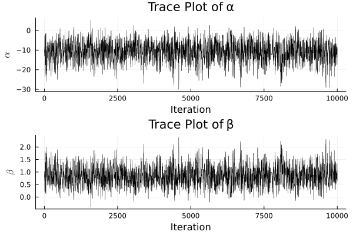
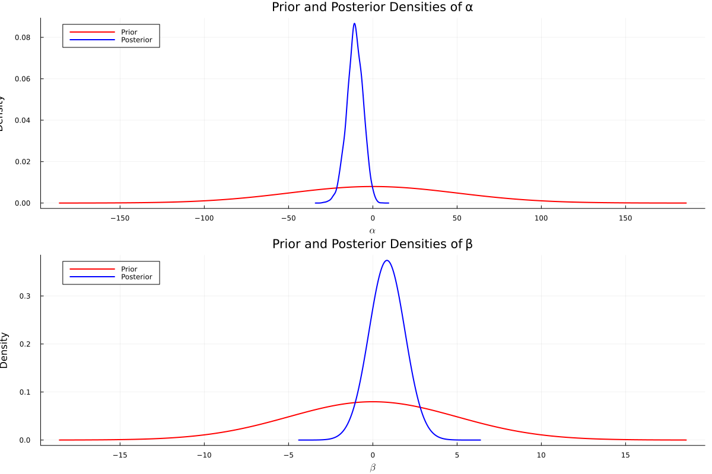
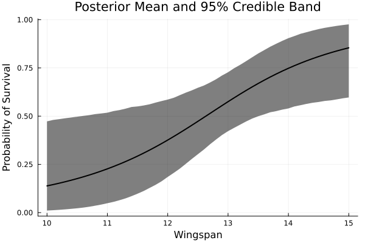

Exercise 10.2 Solution - Hoff, A First Course in Bayesian Statistical Methods
標準ベイズ統計学 演習問題 10.2 解答例
a)
Answer
b)
Answer
Let \(p\) be the probability of nesting success. Then,
\begin{align*} \alpha + \beta x_i &= \text{logit } p \\ &= \log \frac{p}{1-p}. \\ \end{align*}Thus, if we have no prior information about the probability of nesting success, we can set the prior expectation of \(\alpha + \beta x_i\) to 0, \(p = 0.5\). Also, we have no prior information about the relationship between wingspan and nesting success, so we can set the prior expectation of \(\beta\) to 0. Consequently, we can set the prior expectation of \(\alpha\) to 0.
Next, we consider the prior variance of \(\alpha\) and \(\beta\). Suppose temporarily that \(\beta = 0\). If the prior variance of \(\alpha\) is set to \(2500\), \(\alpha\) ranges between \(-100\) and \(100\) for 95% probability, and the odds ratio should be between \(\exp(-100) \approx 3.7 \times 10^{-44}\) and \(\exp(100) \approx 2.7 \times 10^{43}\). This prior can be seen quite uninformative. Similarly, considering \(x_i\) ranges between 10 and 15, we can set the prior variance of \(\beta\) to 25. Thus, we can set the prior distribution of \(\alpha\) and \(\beta\) as follows:
\begin{align*} \alpha &\sim \mathcal{N}(0, 2500) \\ \beta &\sim \mathcal{N}(0, 25) \\ \end{align*}c)
Answer
using BayesPlots using DelimitedFiles using Distributions using LaTeXStrings using LinearAlgebra using MCMCChains using Plots using Plots.Measures using Random using StatsBase using StatsModels using StatsPlots using GLM
data = readdlm("../../Exercises/msparrownest.dat") y = data[:, 1] x = data[:, 2] # add intercept x = hcat(ones(length(x)), x) function MetropolisLogit(S, y, x, β₀, Σ₀, var_prop; seed=123) # S: number of samples # y: response vector # x: predictor vector # β₀: prior mean of β # Σ₀: prior covariance of β # var_prop: proposal variance function logistic(ψ) return exp(ψ) / (1 + exp(ψ)) end Random.seed!(seed) q = length(β₀) BETA = Matrix{Float64}(undef, S, q) acs = 0 # acceptance rate # Initialize glmfit = glm(x, y, Binomial(), LogitLink()) β = coef(glmfit) # Metropolis algorithm for s in 1:S p = logistic.(x*β) # Draw β* β_star = rand(MvNormal(β, var_prop)) p_star = logistic.(x*β_star) log_r = sum(logpdf.(Bernoulli.(p_star), y)) + logpdf(MvNormal(β_star, Σ₀), β) - sum(logpdf.(Bernoulli.(p), y)) - logpdf(MvNormal(β, Σ₀), β_star) if log(rand()) < log_r β = β_star acs += 1 end BETA[s, :] = β end return BETA, acs/S end # Prior β₀ = [0, 0] Σ₀ = [2500 0; 0 25] S = 10000 # search best proposal variance for i in 1:20 # Proposal variance var_prop = i*inv(x'x) BETA, acs = MetropolisLogit(S, y, x, β₀, Σ₀, var_prop) println("i = ", i) println("acceptance rate = ", acs) ess_α = MCMCDiagnosticTools.ess(BETA[:,1]) ess_β = MCMCDiagnosticTools.ess(BETA[:,2]) println("ess_α = ", ess_α) println("ess_β = ", ess_β) end
var_prop = 17*inv(x'x) BETA, acs = MetropolisLogit(S, y, x, β₀, Σ₀, var_prop) ess(MCMCChains.Chains(BETA))
ESS
parameters ess ess_per_sec
Symbol Float64 Missing
param_1 1261.2209 missing
param_2 1248.0384 missing

d)
Answer

e)
Answer
x_grid = 10:0.1:15 x_grid = hcat(ones(length(x_grid)), x_grid) # %% f_post = logistic.(x_grid*BETA[burnin:end, :]') # %% f_post_mean = mean(f_post, dims=2) f_post_lower = map(x -> quantile(x, 0.025), eachrow(f_post)) f_post_upper = map(x -> quantile(x, 0.975), eachrow(f_post))
